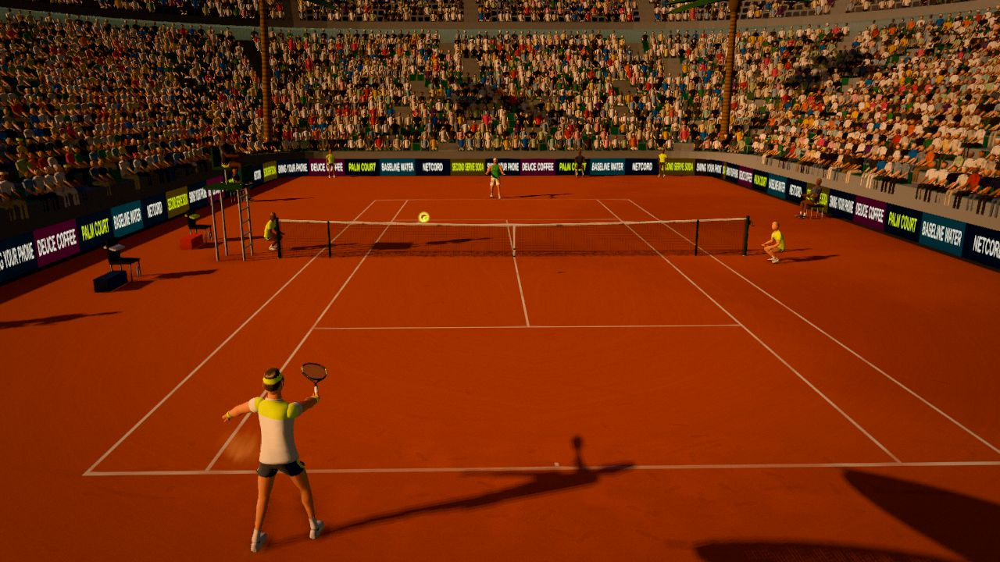

Key takeaways
- Two properties of a surface matter most: how high and fast the ball bounces, and how much the surface grips the spin.
- Hard courts are the middle ground and the most common. Clay is slower with a high bounce. Grass is fast with a low, skidding bounce.
- On slow courts be patient, use height and spin, and expect long rallies. On fast courts, hit early, keep the ball low and shorten your swing.
- Shoes and balls are made for the surface, so wear and buy accordingly.
Why the surface matters
When a ball lands, two things happen. Some of its downward speed comes back up as bounce, and the surface grips the ball, which changes its spin and slows it down. A surface that grips the ball takes pace off it and makes it sit up and bounce high. A surface that grips little lets the ball skid on, low and fast. Those differences are why tennis has a "clay-court specialist" and a "grass-court specialist", and why players adapt their games from one season to the next.
Hard courts
A hard court is a base of concrete or asphalt, covered by layers of acrylic paint. Its speed depends on the paint: more sand in the paint gives a rougher, slower court, and a smoother one is faster. In general a hard court plays at a medium pace with a true, predictable bounce, which is why it suits almost every style of play. The serve is rewarded, because the ball keeps its pace, and long rallies are possible. The surface does not give, so it is harder on joints than a softer court, and it wears shoes out faster. It is also the court many players find near them, so many people learn the game on one.
Clay courts
Clay courts are made of crushed brick (the red kind) or stone (the green kind), packed hard and swept smooth. Clay is a slow surface. The ball grips as it lands, loses pace and bounces high, which gives the receiver more time. Rallies get longer and the serve is less decisive, so players who rely on topspin, patience and defence do well. The loose top layer lets you slide into shots, which is a skill of its own and a good way to reach wide balls once it has been learned (ask a coach, and start slowly). Another feature is that the ball leaves a mark in the clay, so a disputed line call can be settled by looking for it. Clay needs upkeep, such as watering and brushing, and it can be unplayable in rain.

Grass courts
Grass is the fast one. The ball skids through with a low bounce and little grip, so there is less time to react, and an unevenly worn court can make the bounce unpredictable, especially near the baseline where the grass wears away first. A big serve and a short backswing do well, slice stays very low, and coming to the net is rewarded because passing shots are hard to hit. Footwork is different: short, quick steps with a low body, because the surface can be slippery. Grass needs a lot of care and fewer courts have it, so many players meet it rarely.
Other surfaces
Indoor courts are usually a synthetic carpet or a hard surface under a roof, with no wind or sun to worry about, and their pace varies from medium to fast. Many clubs also use artificial clay, a sand-filled synthetic carpet that plays somewhat like clay but drains well and needs less care. When you play on a new surface, it is worth spending a few minutes feeling the bounce before the match starts.
How to adapt
| Surface | The ball | What works |
|---|---|---|
| Hard | Medium pace, true bounce | Your normal game. Soften your knees on long days, as the court does not give. |
| Clay | Slow, high bounce, grips spin | Be patient, use height and topspin, give yourself time, move your feet, and use drop shots and angles. |
| Grass | Fast, low, skids | Shorten the swing, bend your knees, hit early, use slice and the serve, and look for chances at the net. |
| Indoor | Pace varies, no wind | Take the ball early and play for first-strike points. |
Serving and returning on each surface
The serve is where the court changes the game most. On a hard court a flat serve keeps its pace and is a real weapon, and a kick serve gives a good second serve. On clay the same flat serve loses speed on the bounce, so servers lean on spin and placement, and a kick serve that jumps up high to the backhand is a classic weapon. On grass a slice serve skids low and away, and the receiver has less time, so a short, compact return swing is the answer. As a receiver, stand a little further back on clay, where the ball slows down and bounces high, and keep your return swing short on grass.
Getting used to a surface you rarely play on
Most of us cannot practise on all three. A few habits carry across. To prepare for clay on a hard court, work on patience: play long cross-court rallies with plenty of height, and practise defending balls that come back. To prepare for grass, practise taking the ball early and keeping your racket low, with a shorter backswing. Wherever you play, warm up for a few minutes on the actual court, hit some balls from the baseline and the net and watch how high they come up, and then adjust your starting position before the first game.
Shoes and balls
Court shoes are designed for the surface. Clay shoes have a pattern on the sole that grips loose material and sheds it. Hard-court shoes have durable soles for the abrasive surface. Grass shoes have small studs or nubs. Balls differ too: balls for hard courts have a tougher felt, while those for clay tend to have a softer felt. The equipment article covers balls and shoes in more detail.
Mistakes to avoid
- Playing every surface the same. A flat, hard-hitting style that works on grass can leave you too far from the point on clay.
- Not giving yourself time. On a new surface play easy shots for a few minutes and watch the bounce.
- Wrong shoes. Slipping or sticking on a court is a way to injure an ankle or knee.
- Expecting the same serve. A serve that wins easy points on one surface may sit up on another.
Try it in Palm Court
The game has all three surfaces, and its ball physics gives each one a real character. In Match setup, choose Hard (free from the start), Clay (level 3) or Grass (level 6). The game's numbers: on hard, the ball keeps 76 per cent of its downward speed on the bounce and the court grips medium; on clay it keeps 81 per cent (the highest) and grips most; on grass it keeps 70 per cent (the lowest) and grips least, which is what makes grass the court where the ball skids. The Beach Court (level 7) and the Indoor Arena (level 11) change the look and the sound but play as hard courts, and the Daily Cup rotates through courts. Play the same Rookie match on clay and then on grass (start from the game page) and compare the rallies. After a close ball the line review shows the ball's mark against the line, like the mark you would check on a real clay court. The courts and modes guide goes into the details, and the topspin and slice article explains how spin behaves.